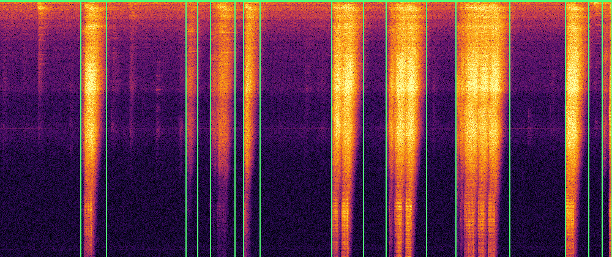
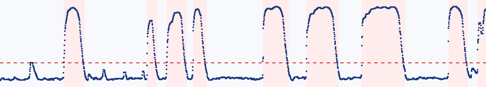

| # | 起止 (s) | 时长 (s) | 峰值 z | 质心 (Hz) | 平坦度 | 4–10k 占比 | <200Hz 占比 | 峰值频率 (Hz) | 起始斜率 (z/s) |
|---|---|---|---|---|---|---|---|---|---|
| 1 | 3.94 – 5.20 | 1.26 | 36.3 | 6440 | 0.135 | 72.6% | 0.3% | 6697 | 158 |
| 2 | 9.08 – 9.65 | 0.57 | 29.7 | 3123 | 0.065 | 30.4% | 11.8% | 194 | 89 |
| 3 | 10.29 – 11.48 | 1.19 | 33.9 | 3019 | 0.057 | 29.9% | 4.8% | 452 | 123 |
| 4 | 11.91 – 12.71 | 0.80 | 35.6 | 4798 | 0.107 | 51.3% | 3.0% | 194 | 115 |
| 5 | 16.21 – 17.79 | 1.58 | 36.9 | 6253 | 0.201 | 69.8% | 0.2% | 6761 | 174 |
| 6 | 18.90 – 20.87 | 1.97 | 36.6 | 6697 | 0.241 | 70.5% | 0.4% | 6632 | 91 |
| 7 | 22.32 – 24.96 | 2.64 | 36.7 | 6312 | 0.198 | 68.3% | 0.4% | 6761 | 83 |
| 8 | 27.66 – 28.83 | 1.17 | 36.9 | 6815 | 0.244 | 68.3% | 0.4% | 6804 | 90 |
| 9 | 29.47 – 29.96 | 0.49 | 35.5 | 6907 | 0.303 | 59.7% | 4.2% | 215 | 101 |
事件特征已写入 events.csv / events.json，这是后续 L2 的训练输入。
平坦度接近 0 → 窄带/谐波；接近 1 → 宽带噪声。起始斜率大 → 冲击型；小 → 缓变型。
版本 l1_demo · 阈值 8.00
· 正常训练文件 1 个 · demo=true
L1 只学“正常长什么样”。L2 尚未训练，按设计在服务器上用人工复核数据迭代； 当前报告只把事件和特征交给人审。